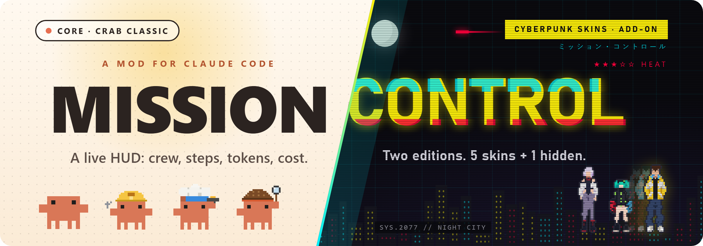
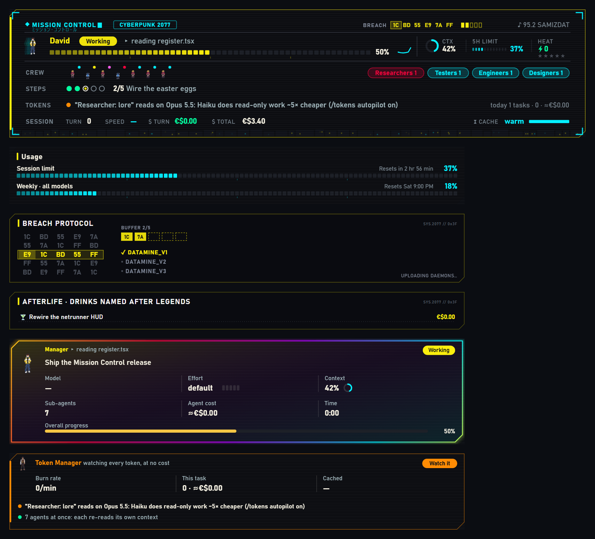
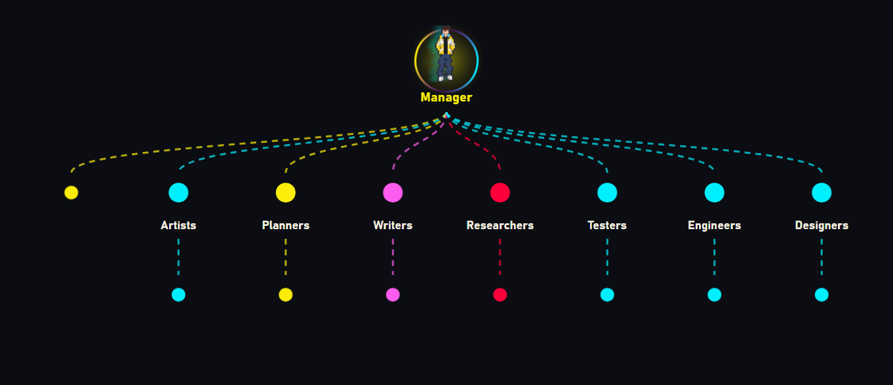
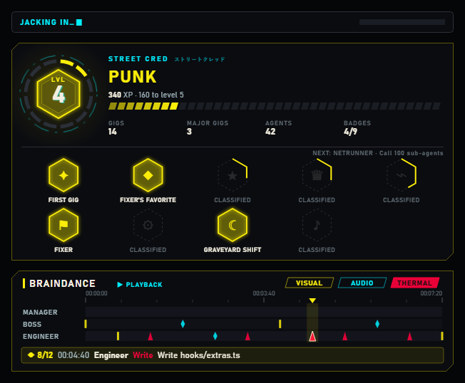

A mod for Claude Code
The problem
Sub-agents start and finish out of sight.
The plan lives in the chat, not on screen.
Tokens and limits only show up when you ask.

What it shows
The crew

Crew mode splits big jobs across sub-agents on its own. Finished agents fold away.
Token Manager
Burn rate, cache hits and spend, in 6 currencies.
Set a per-task budget; it warns at 80% and 100%.
Read-only explorers run on Haiku unless you pick a model.
A toast at 10 and 5 minutes before the prompt cache expires.
Skins
| Skin | Edition | The look |
|---|---|---|
| default | Core | The app’s own look, just the data |
| Crab Classic | Core | A working crab in costume per role |
| Cyberpunk 2077 | Add-on | Neon yellow, cyan and hot red |
| Lucy · Edgerunners | Add-on | Rose-pink and cyan under the moon |
| Arasaka | Add-on | Corporate red and black |
| ??? | Add-on | Not in the picker. Wake up… |
Pick with /skins, or make your own as a small JSON file.
Cyberpunk add-on
Unofficial, non-commercial fan project.

Install in 3 steps
Works on macOS, Windows and Linux, in the desktop app and the CLI.
Commands
| Command | What it does |
|---|---|
| /missioncontrol | Open the pane |
| /skins | Pick a skin |
| /tokens | Token report and budget |
| /autocrew | Crew mode on or off |
| /prefs | How Claude should answer |
Where it stands · v0.3.0
The blank Mission Control pane in the Mac desktop app (pull request #1)
89 of 89 automated tests pass
A Mac audit of design, bugs and platform quirks